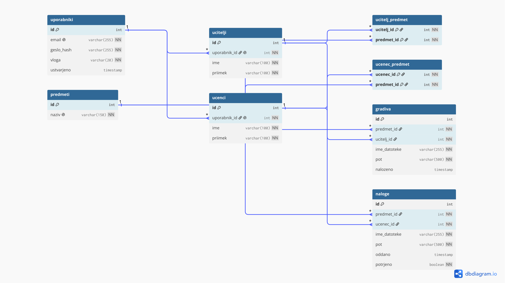

| Predmet: | RPS, Računalniški produkti in storitve |
| Obdobje: | 14. 9. do 20. 9. 2026 |
| Člani: | Jan Marko (vzdrževalec IS), Črt Peterlin (razvijalec), Matevž Zvir (razvijalec) |
| Repozitorij: | https://github.com/janMsc123/sola-is |
| Aplikacija: | https://projekt.pajp.duckdns.org |
app/, db/init/, porocila/, dokumentacija/, scripts/). Pripravil je Dockerfile in docker-compose.yml z bazo MariaDB in aplikacijo ter na strežniku z Linuxom zagnal preizkusni vsebnik. Javno domeno je prek obrnjenega posrednika Caddy, ki sam pridobi potrdilo Let's Encrypt, usmeril na aplikacijo. Nastavil je še samodejno namestitev: systemd timer vsako minuto preveri vejo main in ob spremembi ponovno zgradi vsebnike.| Področje | Izbira | Razlog |
|---|---|---|
| Aplikacija | Node.js 20 + Express | Na strežniku in v brskalniku pišemo v istem jeziku (JavaScript). |
| Podatkovna baza | MariaDB 11 | Je odprtokodna relacijska baza, ki jo poznamo s pouka. |
| Frontend | HTML, CSS, JS | Brez ogrodij, da je odvisnosti čim manj. |
| Vsebniki | Docker + Docker Compose | Celotno okolje zaženemo z enim ukazom. |
| HTTPS in domena | Caddy, DuckDNS | Potrdilo Let's Encrypt se pridobi samodejno, poddomena je brezplačna. |
| Pogled | Funkcionalnosti |
|---|---|
| Administrator | Vnaša, ureja in briše predmete (vsaj 10), učitelje (vsaj 20) in učence (vsaj 100). Učiteljem dodeljuje predmete, učence pa vpisuje k predmetom. |
| Učitelj | Nalaga in briše gradiva samo pri predmetih, ki jih poučuje, in pregleduje naloge, ki so jih oddali učenci. |
| Učenec | Se registrira, ureja svoj profil in izbira predmete. Vidi gradiva in oddaja naloge, ki se shranijo kot Priimek Ime - Naslov naloge.ext. Ponovna oddaja povozi prejšnjo šele po njegovi potrditvi. |
Gesla so shranjena samo zgoščena (bcrypt). Vsi trije pogledi uporabljajo skupno prijavo, pravice pa se preverjajo na strežniku glede na vlogo uporabnika.

Tabela uporabniki hrani prijavne podatke in vlogo. Tabeli ucitelji in ucenci sta nanjo vezani prek uporabnik_id. Razmerji M:N med učitelji in predmeti ter med učenci in predmeti razrešujeta povezovalni tabeli ucitelj_predmet in ucenec_predmet. V tabeli gradiva so datoteke učiteljev, v tabeli naloge pa oddaje učencev.
main združujemo samo prek pull requesta, ker se main samodejno namesti na strežnik.porocila/<ime>/.| Zahteva | Stanje |
|---|---|
| Repozitorij na GitHubu, dostopen mentorju | opravljeno |
| Docker okolje in preizkusni vsebnik | opravljeno |
| Specifikacija za vse tri poglede | opravljeno |
| ER diagram (najmanj 4 tabele, PK in FK) | opravljeno |
| Skice (wireframe) za vse tri poglede | v izdelavi |
Napisali bomo SQL skripto za tabele po ER diagramu in pripravili testne podatke. Dokončali bomo docker-compose.yml in .env ter aplikacijo povezali z bazo.